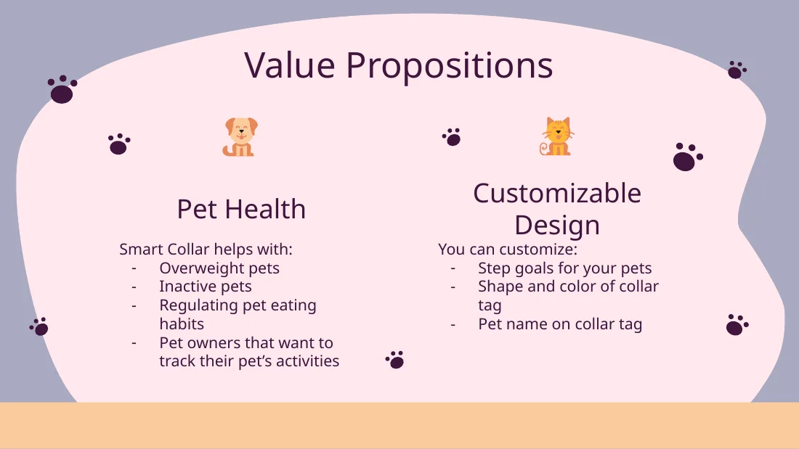
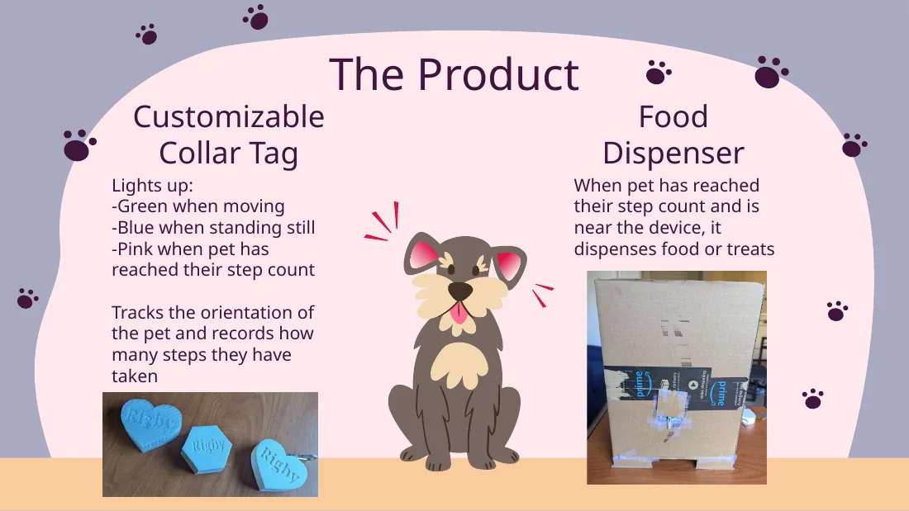
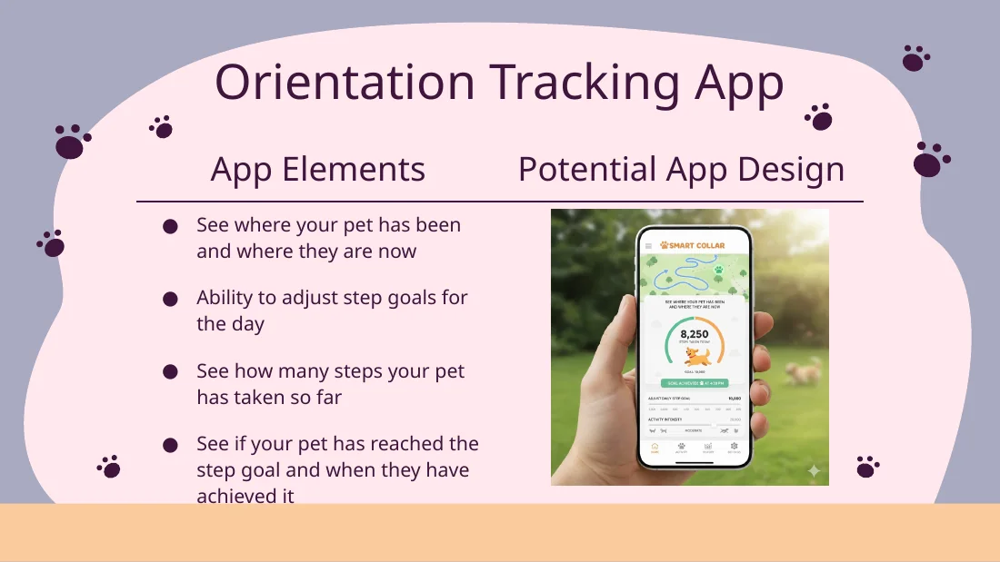
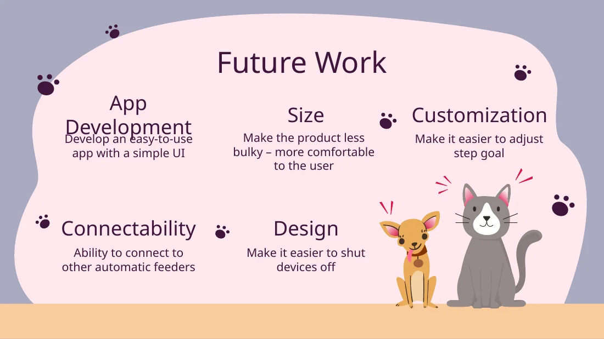

Product concept
A customizable collar tag tracks pet activity and communicates with a food/treat dispenser.
Embedded Systems + Wearable Technology
Pet activity tracker linked to an automated feeder, connecting wearable motion data to physical device action.

A customizable collar tag tracks pet activity and communicates with a food/treat dispenser.
The presentation used green for moving, blue for standing still, and pink after the pet reached its step goal.
Potential features included location/activity history, adjustable step goals, and step-goal progress.
Motion/orientation data is used to estimate activity and trigger system behavior.
The feeder concept dispenses food or treats after a step goal is reached and the pet is near the device.
Smaller hardware, easier controls, a simpler app UI, and compatibility with other automatic feeders.
Project archive
This material stays inside the case study so the main portfolio pages remain clean.



